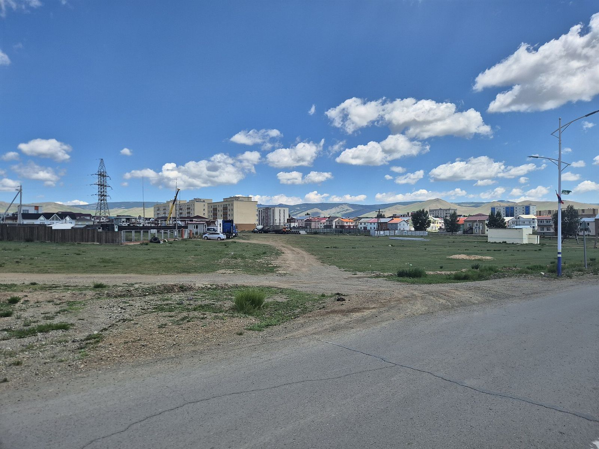

Ил тод байдал
Бид юу мэдэж байгаа, юу мэдэхгүй байгаагаа хоёуланг нь энд бичсэн. Батлагдаагүй мэдээллийг бөглөхгүй — «хүлээгдэж байна» гэж тодорхой тэмдэглэнэ.

Эрх зүйн байдал
- Байгууллагын нэр
- Төв аймгийн хөгжлийн бэрхшээлтэй иргэдийн холбоо
- Улсын бүртгэлийн дугаар
- 8136629
- Хэлбэр
- Холбоо /ГҮТББ/
- Төрөл
- Ашгийн төлөө бус
- Байгууллагдсан
- 2014-04-17
- Бүртгэлтэй хаяг
- Төв аймаг, Зуунмод сум, 2-р баг, Ланс 11-15
- Үйл ажиллагааны чиглэл
- 7820 · 8211 · 9499
- УЗ-ийн дарга
- Мажаа Эрдэнэжав (2024-08-16-наас)
Эх сурвалж: opendatalab.mn — улсын бүртгэлийн өгөгдөл
Санхүүжилт
Холбоо нь ашгийн төлөө бус байгууллага бөгөөд улсын бүртгэлд ашгийн төлөө бус төрлөөр бүртгэгдсэн. Одоогоор бидэнд дараах мэдээлэл байхгүй байна:
- Жилийн санхүүгийн тайлан
- Орлогын эх үүсвэр, төсөл, хандивлагчид
- Хандив хүлээн авах дансны мэдээлэл
- Гишүүдийн тоо, ажилтны бүрэлдэхүүн
Хамтрагчид
Олон нийтийн эх сурвалжид хамтран ажилласан нь баримтлагдсан байгууллагууд:
- Төв аймгийн Засаг даргын тамгын газар — Нийгмийн бодлогын хэлтэс
- Залуучуудын хөгжлийн төв, Төв аймаг
- Холт интернэйшнл (Holt International)
- Дэлхийн зөн (World Vision) — Төв орон нутгийн хөтөлбөр
Биднийг хэрхэн шалгах вэ
Холбооны эрх зүйн байдлыг улсын бүртгэлийн нээлттэй эх сурвалжаас бие даан шалгах боломжтой:
Энэхүү вэбсайт дээрх бүх баримт мэдээлэл эх сурвалжтай. Хэрэв та алдаа олбол бидэнд мэдэгдэнэ үү.
Хүртээмж
Энэхүү вэбсайт нь хөгжлийн бэрхшээлтэй хүн бүрт хүртээмжтэй байхаар бүтээгдсэн. Хүртээмжийн үндэс болгон GOV.UK Frontend дизайны системийг (нээлттэй эх, MIT лиценз) ашигласан — уг систем нь хөгжлийн бэрхшээлтэй хэрэглэгчидтэй хамт туршиж, WCAG 2.2 түвшинд нийцүүлэн бүтээгдсэн.
Хүртээмжийн талаарх дэлгэрэнгүй
- Гар ашиглан бүрэн удирдах боломжтой, фокус тодорхой харагдана
- Текстийн контраст нь WCAG 2.2 AA түвшинд нийцнэ
- Зургууд бүр утга бүхий alt тайлбартай
- Хуудсын бүтэц нь гарчгийн түвшин, газрын тэмдэглэгээгээр тодорхойлогдсон
- Хөдөлгөөн багасгах системийн тохиргоог хүндэтгэнэ
Хэрэв та хүртээмжийн саад тотгор олбол бидэнтэй холбогдоно уу.